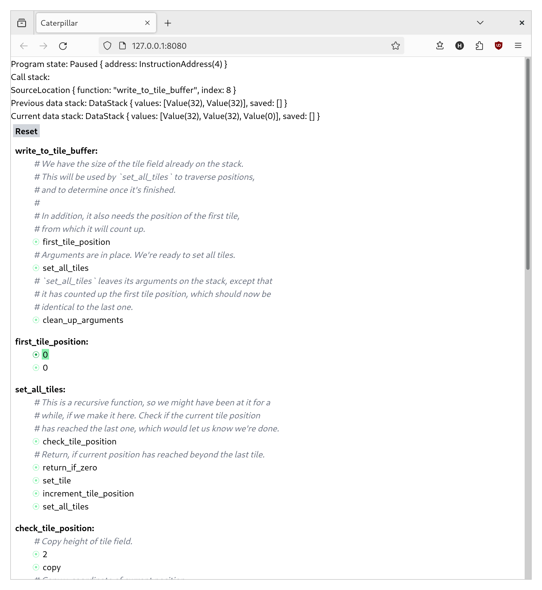

Daily Note - 2024-05-01
Hey, I'm Hanno! These are my daily notes on Crosscut, the programming language I'm creating. If you have any questions, comments, or feedback, please get in touch!
This note was published before Crosscut was called Crosscut! If it refers to "Caterpillar", that is the old name, just so you know.
Last week, I wrote about that ugly debugger I wrote for the current Caterpillar prototype. I still needed to make some improvements to the debugger and the language runtime, but I was finally able to debug that broken code I had sitting in a local branch.

The debugger is still ugly as hell, but it's starting to shed some light on the core questions that the current prototype was created to answer: Yes, it seems practical to build a debugger for Caterpillar. Yes, this debugger makes it practical to work with a language that is otherwise very confusing.
My next goal is to further substantiate these answers, by writing more code. What I currently have just draws a white background into a window. I want to turn this into a small snake game.